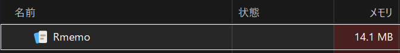
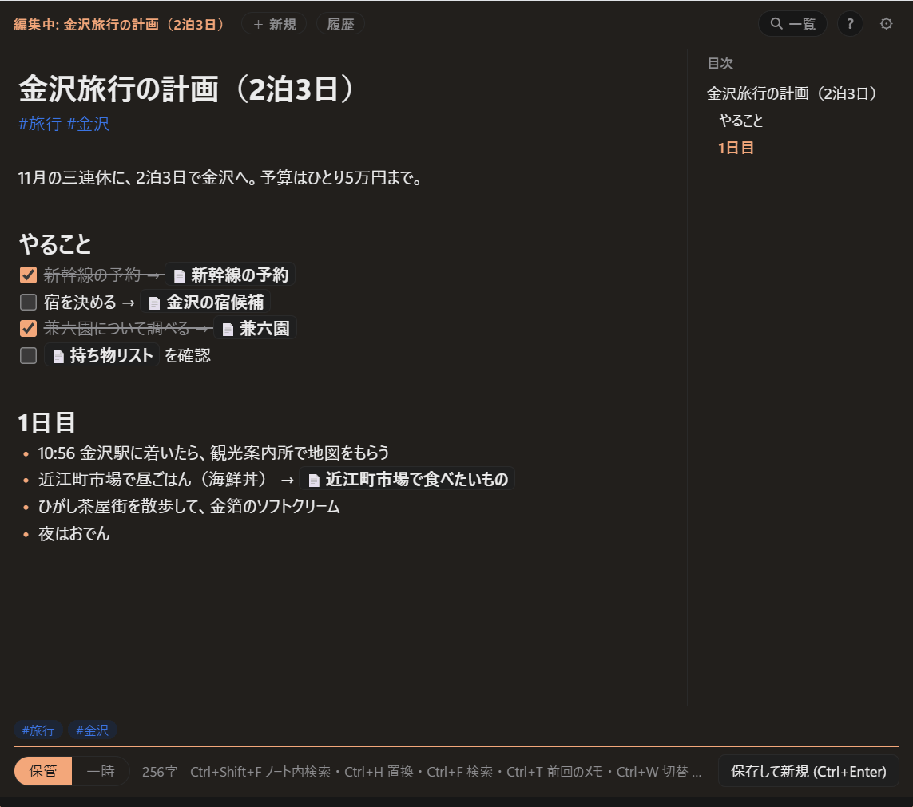
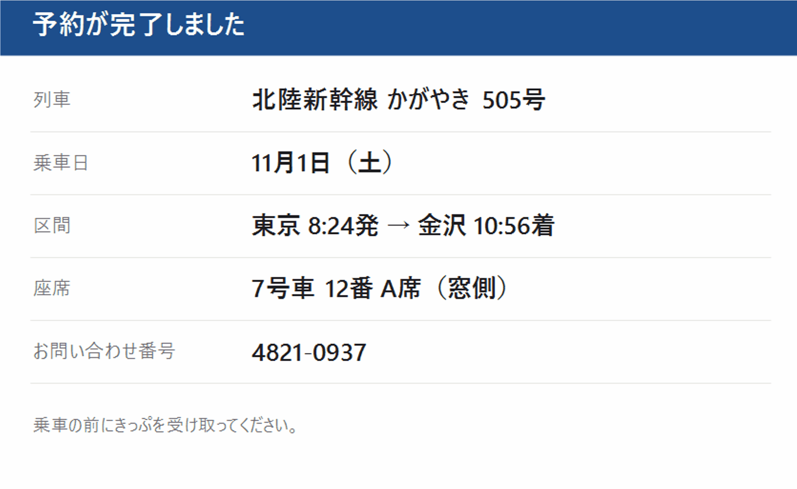

思いついたら、
Ctrl + N。
Rmemo は、どの画面からでもホットキーひとつで呼び出せる Windows 用のメモアプリです。 常駐しても軽いのに、メモの中身まで探せる全文検索、ハッシュタグでの整理、Markdown の整った表示、編集の履歴までそろっています。
- 0.04秒ホットキーから
表示まで - 10MB待機中のメモリ
（メモ 1,000 件） - 3.6MBインストーラーの
大きさ

Windows 10 / 11（64 ビット）・無料・オープンソース（MIT ライセンス）
Store 版はアップデートも自動です。インストーラー版の違いは → よくある質問
すべての機能と使い方は 使い方ガイド →ほかのメモアプリと、ここが違う
アプリを探して、開いて、保存場所を選ぶ。そういう手間をなくしました。
どの画面からでも、すぐ書ける
Ctrl+N で、今の作業の上に小さな入力窓が開きます。ほかの画面をクリックすれば隠れて、元の作業にそのまま戻れます。キーは設定で変えられます。
常駐していても軽い
しばらく使わないと画面のメモリを解放し、本体だけで待機します。なぜ軽いのか
アカウントもネットもいらない
登録なしで、インストールしたらすぐ使えます。画像の文字の読み取りも含めて、メモは PC の外に送りません。
メモはただの .md ファイル
独自の形式やデータベースはありません。メモ帳や VS Code でも開けて、Rmemo をやめてもメモは残ります。くわしく
書いたそばから整う
見出し・リスト・チェックボックス・コードブロックを、Markdown で打ったその場できれいに表示。日本語入力のままでも使えます。
残すメモと、使い捨てのメモ
とりあえずのメモは「一時」に。一覧が埋まらず、古くなったら 1 件ずつ片づけられます。くわしく
よくあるメモの取り方と比べると
| Rmemo | Windows のメモ帳 | クラウド型のノートアプリ | |
|---|---|---|---|
| 呼び出し方 | どの画面からでもホットキー | スタートメニューなどから起動 | アプリかブラウザを開く |
| 表示されるまで | 約 0.04 秒 | 約 0.18 秒（起動から） | アプリによる |
| メモの整理 | 一覧・タグ・リンク・検索 | ファイルを自分で管理 | 一覧・タグ・検索 |
| 画像の中の文字で検索 | できる（PC の中で読み取り） | — | サービスによる |
| 保存形式 | .md（テキスト） | .txt（テキスト） | サービス独自の形式が多い |
| アカウント | 不要 | 不要 | 必要なことが多い |
| インターネット接続 | 不要 | 不要 | 必要なことが多い |
時間は開発者の PC（Windows 11）での実測です。Rmemo は常駐している状態から、メモ帳は起動してから、ウィンドウが表示されるまでを測りました。
常駐していても、ほとんど場所をとらない
いつでも呼び出せるように、Rmemo はタスクトレイで待機しています。 そのぶん、待っている間はできるだけ PC の負担にならないように作りました。 機能を削って軽くしたのではありません（できること）。
| 状態 | メモリ（メモ 1,000 件） | 呼び出してから表示まで |
|---|---|---|
| 閉じて 10 分以上たったとき | 約 10MB | 約 0.3〜0.4 秒（最初の 1 回だけ） |
| 開いているとき・閉じて 10 分以内 | 約 105MB | 約 0.04 秒 |
メモの量とメモリ
検索を速くするために、メモはすべてメモリ上に読み込んでいます。そのため、メモが増えるほど使うメモリも増えます。目安は、メモの文字の量のおよそ 2〜3 倍です。
| メモの量 | 閉じて 10 分以上たったとき | 開いているとき |
|---|---|---|
| 0 件 | 約 6MB | 約 100MB |
| 1,000 件（約 1MB） | 約 10MB | 約 105MB |
| 5,000 件（約 5MB） | 約 20MB | 約 135MB |
| 10,000 件（約 10MB） | 約 30MB | 約 155MB |
開発者の PC（Windows 11）での実測です。メモは 1 件あたり約 1KB（日本語で 300 字ほど）で測りました。メモリはタスクマネージャーの「メモリ」の値で、Rmemo が使うすべてのプロセスの合計です。

本体は Rust 製
メモの読み書きや検索をする本体（rmemo.exe）は、Rust で書いた約 9MB の実行ファイルひとつです。メモはメモリ上に読み込んでおくので、検索のたびにディスクを読み直しません。
UI は Windows 標準の WebView2 で描画
画面の描画には、Windows に標準で入っている WebView2 を使います。Electron のように Chromium をアプリに同梱しないので、インストーラーは 3.6MB です。
使わない間は、画面のメモリを解放
閉じたまま 10 分たつと、WebView2 のプロセスを終了してメモリを解放します。10 分以内なら一瞬で開き、それより後も最初の 1 回だけ 0.3 秒ほどです。
軽いのに、できることは多い
本体は約 9MB の実行ファイルひとつ。それでも、メモアプリに欲しい機能はひととおり入っています。
メモの中身まで、全部検索
タイトルだけでなく本文も、貼った画像の中の文字も対象です。1 文字打つごとに絞り込まれ、ひらがな・カタカナ・ローマ字・全角半角も区別しないので、うろ覚えでも見つかります。
ハッシュタグでまとめる
本文に #仕事 のように書くだけでタグが付きます。# を打てば使ったタグが候補に出て、一覧ではタグを選ぶだけで絞り込めます。タグの名前もまとめて変えられます。
保存を気にしなくていい
書いている途中も自動で保存。前の版も残るので、間違えて消しても履歴から戻せます。
画像も貼れて、中の文字で探せる
スクリーンショットは Ctrl+V で貼るだけ。画像の中の文字も検索で見つかります（読み取りは PC の中だけ）。
メモ同士をつなぐ
[[メモ名]] でほかのメモにリンク。リンクされた側には参照元が出るので、関連するメモをたどれます。
エディタとしても本格的
複数カーソル、行の移動、見出しの折りたたみ、目次、検索・置換。VS Code に慣れた手でもそのまま使えます。
ほかにも
- コードブロックの色分け
- チェックボックス
- ピン留め
- 一時のメモの整理画面
.txtの取り込み（文字コードを自動で判別）- ライト / ダークと配色
- 文字の大きさの変更
- キーの割り当ての変更
- Google ドライブなどで複数の PC と同期
- アプリ内からアップデート

[[ でほかのメモにもつなげます。
残すメモと、使い捨てのメモ
ちょっとしたメモが積もって一覧が埋まる、という悩みを、メモを 2 つに分けて解決します。 Ctrl+L でいつでも切り替えられます。
保管
あとで読み返したいメモ。手順書、アイデア、調べたことのまとめ。ピン留めでよく使うメモを一番上に置けます。
一時
電話番号、買い物リスト、一時的なコピー。とりあえず書く場所です。古くなると印が付き、整理画面で 1 件ずつ「残す / 捨てる」を決められます。
今までのメモも、まとめてお引っ越し
Windows のメモ帳などで書きためた .txt ファイルを、フォルダごと Rmemo に取り込めます。
設定の「取り込み」タブで、フォルダかファイルを選ぶだけです。
文字化けしない
文字コードをファイルごとに見分けるので、昔のメモ帳で保存した Shift_JIS のメモも、そのまま読めます。
書いた頃の順番で並ぶ
元のファイルの日付を引き継ぐので、取り込んだメモが一覧の先頭に固まりません。入っていたフォルダの名前はタグになります。
1 件ずつ整えられる
取り込んだあと、元の txt と整形後のメモを並べて確認できます。見出しや箇条書きに整えるかどうかを選べます。元の .txt はそのまま残ります。
メモは、ただのテキストファイル
メモは Documents\Rmemo に、1 メモ = 1 つの .md ファイルとして保存されます。
独自の形式やデータベースはありません。
アプリがなくても読める
メモ帳でも VS Code でも開けます。Rmemo をやめても、メモはそのまま残ります。
複数の PC で同期
保存フォルダを Google ドライブなどに置けば、別の PC でも同じメモを使えます。 設定方法
外部に送信しない
アカウント登録は不要です。メモはあなたの PC の中だけに保存されます。
画面
クリックすると大きく表示されます。


よく使うキー
キーは設定の「キー設定」タブで自由に変えられます。エディタの機能はアプリの中で F1 を押すと確認できます。すべての画面の使い方は 使い方ガイド にまとめています。
| やりたいこと | キー |
|---|---|
| 入力窓を開く / 閉じる | Ctrl+N |
| 保存して新しいメモへ | Ctrl+Enter |
| 保存して窓を隠す | Ctrl+Shift+Enter |
| 前回のメモに戻る | Ctrl+Shift+T |
| このメモの履歴（前の版に戻す） | Ctrl+Shift+H |
| 保管 / 一時 を切り替え | Ctrl+L |
| メモを探す | Ctrl+Shift+F |
| リンクを付ける | Ctrl+K |
| 同じ語を次々に選ぶ | Ctrl+D |
| 今日の日付を入れる | Ctrl+: |
| 設定 | Ctrl+, |
よくある質問
無料ですか？
はい、無料です。広告もありません。ソースコードは MIT ライセンスで GitHub に公開しています。
Microsoft Store 版とインストーラー版（setup.exe）の違いは？
機能は同じです。Store 版は Microsoft Store からインストールでき、アップデートも Store が自動で行います。インストーラー版は、アプリの中に出る「更新」ボタンでアップデートします。迷ったら Store 版がおすすめです。
インストーラー版で「Windows によって PC が保護されました」と出ます
インストーラー版をダウンロードした場合に表示されることがあります。「詳細情報」→「実行」でインストールできます。Microsoft Store 版ではこの表示は出ません。
インストーラー版から Store 版に乗り換えるには？
「設定」→「アプリ」からインストーラー版の Rmemo をアンインストールしてから、Store 版をインストールしてください。両方を入れると、片方しか起動しません。メモのフォルダはアンインストールしても消えないので、Store 版でもそのまま使えます。
窓が閉じてしまいます。どこにいますか？
Rmemo はタスクトレイに常駐しています。Ctrl+N か、トレイのアイコンをクリックすると開きます。
常駐させておくと、PC が重くなりませんか？
ほとんど影響しません。閉じたまま 10 分たつと画面（WebView2）のメモリを解放するので、待っている間のメモリは、メモが 1,000 件ほどなら約 10MB です（タスクマネージャーの値）。開いている間と、閉じてから 10 分以内は約 105MB を使いますが、そのかわり一瞬で開きます。メモが多いほど少しずつ増えます。くわしくは 常駐していても、ほとんど場所をとらない を見てください。
アンインストールするとメモは消えますか？
消えません。メモのフォルダ（既定では Documents\Rmemo）はそのまま残ります。
今まで使っていたメモ帳のメモを移せますか？
はい。設定の「取り込み」タブで、.txt の入ったフォルダかファイルを選ぶと、まとめて Rmemo のメモになります。元のファイルは消えません。くわしくは 今までのメモも、まとめてお引っ越し を見てください。
ダークモードはありますか？
あります。最初は Windows の設定に合わせて、ライトかダークで表示されます。設定の「ウィンドウ」タブで、どちらかに固定することもできます。
不具合の報告や要望はどこに送ればいいですか？
GitHub の Issues にお願いします。